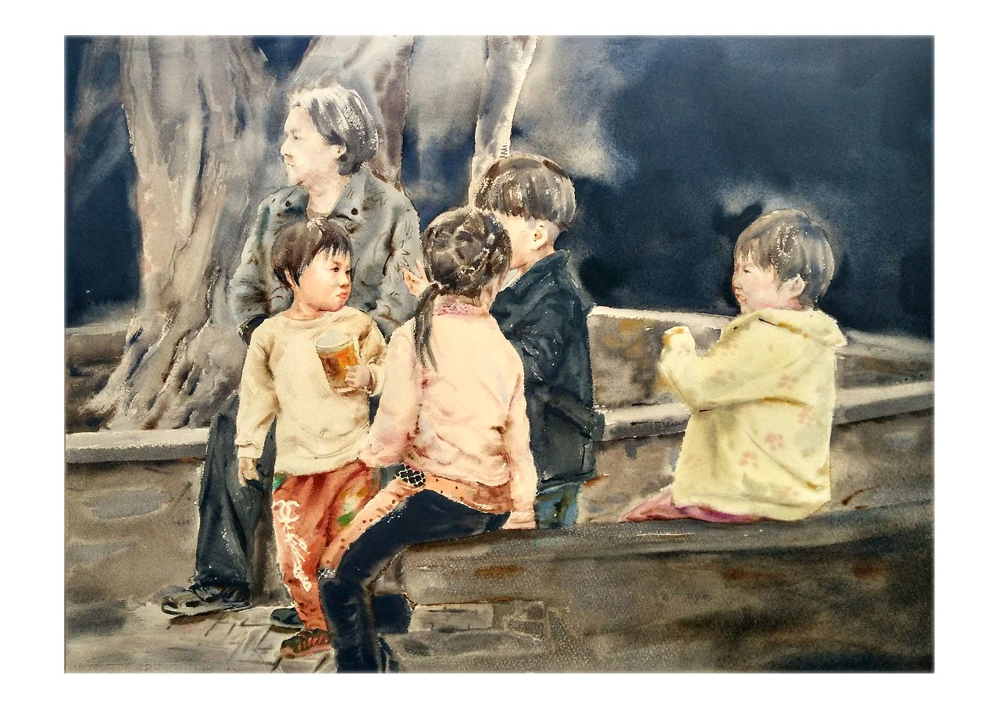
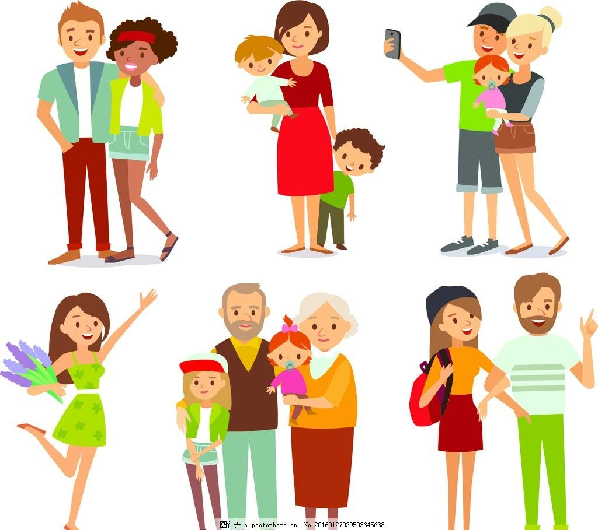

The people are the masters of the country



It is easier said than done to put people first.
As early as the spring and autumn period, mencius, an ancient thinker, advocated that "we are old, and we are old.
Young, old, old, old, old, old, widowed, widowed, alone,
The disabled are supported. If so, "the world can be in the palm of your hand." However, the 24 history of China
Which dynasty did it? Prosperity, such as han and tang dynasties, is also "red wine and meat, road has frozen bones"; Rich as the song,
It is only "net gain, just enough to feed".
It is undoubtedly under the leadership of the communist party of China that "people first" has been turned into reality from a fantasy
China -- in 1949, the people became the political masters, and in 1978, the people became the economic masters.
In 2012 the people became masters of development. Especially in the last five years, people's sense of gain is full.
Solid, it's all-around.
The goal of "people first" is to achieve a comfortable life for all.
And the standard of well - off is "one cannot be less". After nearly 40 years of reform and opening-up,
China has achieved moderate prosperity for the majority of people, but three groups are still lagging behind.
The three groups are as follows:
cadres and the masses of all ethnic groups should cherish national unity as much as they cherish their own eyes, and value national unity as much as they cherish their own lives," "xi said. "" national unity is the lifeblood of people of all nationalities...
Is the symmetry of extensive poverty alleviation, is the pointer to the environment of different poverty areas, Accurate identification of poverty alleviation objects by scientific and effective procedures according to different conditions of poor peasant households. Precise help, accurate management of poverty.
The old revolutionary base areas of China are referred to as old revolutionary base areas or old revolutionary base areas, which refer to the revolutionary base areas established under the leadership of the older generation of proletarian revolutionaries